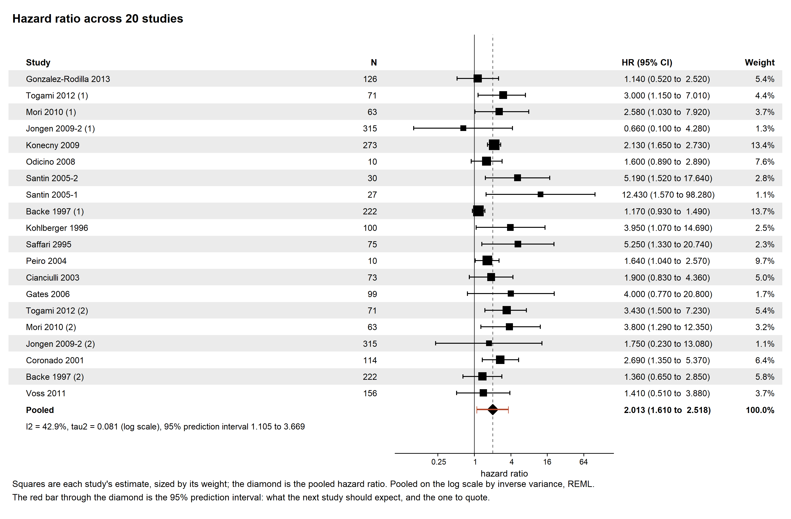

Prognostic meta-analysis argued the way the meta package argues
# log the ratio, recover its standard error # from the interval, remember which scale # you are on, then undo it all to report d$logHR <- log(d$HR) d$seLogHR <- (log(d$HR.975) - log(d$HR.025)) / (2 * 1.96) fit <- metagen(TE = logHR, seTE = seLogHR, data = d, sm = "HR")
Four lines before the model, and every one of them a place to put the wrong column. The c-statistic wants the logit instead of the log, and the O:E ratio wants the log again, so the reader ends up learning three recipes rather than one.
# name the measure the studies reported fit <- easypr(data = ma$zhang, sm = "HR", method = "Inverse", method.tau = "REML")
A prognostic review is one of two things, and the second is two halves. Either it asks what a factor does to risk, or it asks whether a whole model works somewhere else. A model that works has to both rank patients correctly and quote risks that happen.
| sm | The question it answers | Pooled on |
|---|---|---|
| "HR", "OR", "RR" | How much does this factor shift risk? | log, read back as a ratio |
| "cstat" | Does the model rank patients correctly? Discrimination. | logit, read back as a c-statistic |
| "OE" | Are the risks it quotes the risks that happen? Calibration. | log, read back as a ratio |
A model can rank patients perfectly and still quote risks that are twice what happens. A review that reports only the c-statistic has left out whether the numbers mean anything.
One function fits. The other four take what it returned. The package exports nothing else.
| Function | What it gives you | What it will not do |
|---|---|---|
| easypr() | The pooled measure, its confidence interval, the prediction interval, tau-squared and I-squared, and the per-study table underneath. | Choose the measure. sm decides what is read, and a
table that cannot support it is an error rather than a guess. |
| easypr_forest() | One row per study, with the columns sm chose, the
pooled diamond, and the prediction interval drawn through it. |
Hide the prediction interval. It is drawn by default, because it is the one to quote. |
| easypr_loo() | The pool refitted with each study left out in turn, sorted, so the one carrying the result is at the end. | Suggest that the study which moves it should be dropped. |
| easypr_metareg() | A study-level covariate against the measure, with the bubble plot that shows how few studies carry each end of the line. | Call a study-level slope a patient-level effect. |
| easypr_funnel() | The studies against their standard errors, with the asymmetry test metamisc recommends for that measure. | Say the asymmetry is publication bias. |
The pooled number, both intervals, and the sentence saying which of them to read. Nothing has to be exponentiated by hand, and tau-squared is labelled with the scale it belongs to, because it is a variance on the pooling scale and never travels back with the effect.
fit <- easypr(data = ma$zhang, method.tau = "REML", sm = "HR", method = "Inverse") fit
